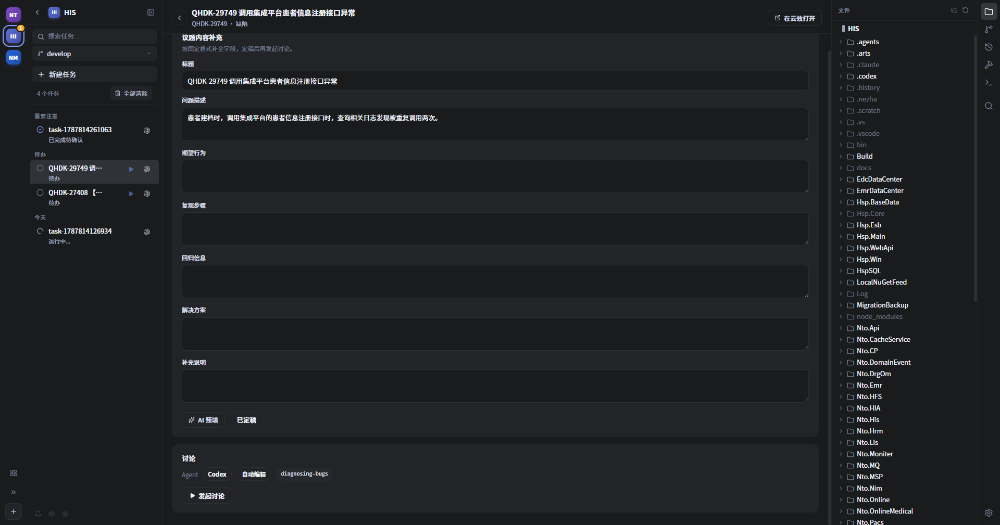

Nezha 操作手册
面向使用 Nezha 管理 AI 编程任务，并把结果沉淀回云效议题与知识库的团队。聚焦三条功能线：云效议题闭环、知识沉淀闭环、技能管理。
0环境与前置条件
使用这三条功能线之前，确认以下条件已满足：
| 条件 | 说明 |
|---|---|
| 已安装 Claude Code / Codex | Nezha 通过它们执行 Agent 会话，需能在终端正常调用。 |
| 云效 Projex 个人访问令牌 | 格式 pt-xxxx，用于读取 / 评论 / 创建议题；只存于 ~/.nezha/settings.json。 |
| 目标仓库已注册为 Nezha 项目 | 欢迎页 →「打开项目」，选定仓库根目录即可。 |
| 技能仓库已配置 | 如需统一分发技能，先在「应用设置 → 技能」配置来源（见第 3 节）。 |
1云效议题闭环
云效议题闭环覆盖完整生命周期：云效看议题 → 导入为本地待办 → 补全 / 讨论 → 提交关联编号 → 方案回写云效 →（必要时）补录新议题。核心入口是欢迎页左侧边栏的「云效议题」（云朵图标）。
1.1连接云效
首次进入「云效议题」视图会显示连接表单：
- 填入云效个人访问令牌（
pt-xxxx）。 - 点「获取组织」，拉取当前令牌可见的组织列表；若该令牌只对应一个组织，会自动选中并加载项目。
- 选择组织 → 点「加载项目」选择项目。
- 可选：填入「我的用户 ID / 我的用户名」（留空则自动探测），用于「只看我负责的」过滤。
- 点「保存连接」。成功后视图顶部显示「
组织名 · 项目名」。
后续如需切换账号或项目：顶部「重新连接」进连接表单；「刷新」重新拉取当前项目议题。连接信息保存在应用级设置（~/.nezha/settings.json），每个项目打开时可直接复用。

1.2浏览与筛选议题
- 类别 Tab：全部 / 需求 / 任务 / 缺陷。
- 项目切换：顶部下拉可直接切换云效项目，无需重新进设置。
- 状态过滤：多选状态；「只看我负责的」开关（需已正确识别当前用户）。
- 搜索框：按标题或编号模糊搜索（本地过滤）。
- 分页：每页 100 条，底部「加载更多」，顶部显示
{count} 条议题。

1.3导入为待办任务
每条议题右侧有「导入」按钮：
- 在议题列表上方的「导入到项目」下拉框选择目标本地项目（会记住上次选择）。
- 点「导入」。生成一条
status: todo的本地任务：- 任务名：议题编号 + 标题（如
QHDK-29728 医保主表合同单位回写不匹配）。 - 提示词：议题标题 + 描述 + 状态 / 负责人 / 优先级 / 议题 ID，作为 Agent 上下文。
- 任务侧记录
yunxiaoWorkitemId，可回溯、可去重。
- 任务名：议题编号 + 标题（如
- 去重：同一议题只允许导入一次；已导入的按钮变为「已导入」并禁用。
- 导入后，前往该本地项目的任务看板，任务出现在「待办」列。

1.4补全议题内容
单击「待办」列中的云效议题任务，进入待办任务详情（云效议题详情视图）。若议题字段尚未补全：
- 在「补全议题内容」表单中填写固定格式字段（需求类：背景 / 描述 / 使用频率 / 紧急程度；缺陷类：问题描述 / 复现步骤 / 回归信息等）。
- 可点「AI 预填」由 headless Agent 根据描述生成草稿，失败则手工填写。
- 点「定稿」，草稿写入任务，之后才可发起讨论。

1.5发起讨论
定稿后点「发起讨论」：
- 选择 Agent（Claude / Codex）与权限模式（Ask / Auto-edit / YOLO）。
- 议题中若含图片（
<img>、富文本图片节点、Markdown 图片），发起讨论时 Nezha 会按域名白名单自动下载到.nezha/attachments/<taskId>/，并把路径拼进[Attached images]提示词，Agent 用自身视觉能力读原图（单张 ≤10MB，最多 20 张；失败部分跳过，全部失败则阻断并允许重试）。 - 讨论提示词会附带指令：提交信息必须包含
#<议题编号>（如#QHDK-29312），以便云效自动关联代码。
git_commit 会校验提交信息是否含议题 tag，缺时自动追加；merge_task_worktree 合并前也会校验 base..branch 全部提交含 tag，缺失即阻断并列出违规提交。
1.6方案回写云效（正向闭环收口）
任务完成后（done 且云效导入任务）：
- 任务详情头部出现「回写云效」按钮；任务列表卡片显示「待回写」徽标。
- 点按钮 → 生成「修改方案汇总」预览：事实骨架（议题编号/标题、定稿补充字段、关联 commit 短哈希 + 提交信息、变更统计）+ headless Agent 润色的一段方案汇总；AI 失败时回退为纯事实模板。
- 预览可编辑，也可「重新生成」。
- 确认后点「发布评论」：Nezha 调用
CreateWorkitemComment把汇总作为评论追加到云效议题；「价值评分」小节同时写入云效字段（评分字段写失败时可「重试字段写入」）。 - 成功后按钮置「已回写」。任务记录
yunxiaoWrittenBackAt/yunxiaoCommentId，保证幂等，不重复回写。

1.7补录议题（反向闭环）
如果讨论 / 执行中途发现了需要立项的新问题，可以反向补录成正式议题（不打断当前会话）：
- 在任务运行中，手动调用
yunxiao-backfill-issue技能（该技能位于技能仓库，需已安装到项目）。 - Agent 先问「缺陷还是需求」，再按对应模板逐项盘问（缺陷描述 / 发生频率 / 影响范围 / 业务影响；或需求背景 / 详细描述 / 使用频率 / 紧急程度），并对基础字段做判断（负责人=令牌当前用户，优先级=按价值评分推导，严重程度=Agent 判断，来源默认「内部反馈」，归属项目=当前议题项目）。
- 汇总成最终议题预览，用户确认（可修改），确认即人工闸。
- Agent 按模板结构写出
.nezha/drafts/<taskId>/backfill-issue.json；Nezha 侦测到后，由持有令牌的后端调用CreateWorkitem创建云效新议题 Y。 - 新议题 Y 生成后，Nezha 自动创建一个绑定该议题的本地待办任务（
status=todo，记录来源任务/来源议题），并在云效描述中写清来源行，便于追溯。

1.8议题闭环全景
云效议题（浏览 / 筛选 / 导入）
│ 导入
▼
本地「待办」列 ──► 补全议题内容（定稿）──► 发起讨论（含图片 / 编号关联）
│ │
│ ▼ 讨论中发现新问题
│ 补录议题（云效建新 + 新待办）
│ │
▼ ▼
任务 done ──► 回写云效（评论 + 价值评分） 新待办回到「待办」列
2知识沉淀闭环
知识沉淀解决「Agent 讨论中确认的知识随会话流失」的问题：把讨论里确认的、且有依据的增量知识，提取出来并格式化成云效审核议题，交给知识库负责人审核后更新图谱数据。
done，且项目内已安装 / 可读取 knowledge-sedimentation 技能（知识提取规则所在）。2.1入口
任务为 done 且云效导入时，任务详情头部在「回写云效」旁出现「沉淀知识」按钮（未处理时）；任务卡片可识别处理情况。若任务已记录 knowledgeIssueIds，按钮置「已沉淀」。
2.2生成候选知识
点「沉淀知识」：
- 后端读取
knowledge-sedimentation技能内容，注入 headless prompt。 - 输入包括：会话摘要（约 8000 字截断）、云效议题补充字段与链接、知识图谱 data 目录（现场比对）、项目根代码（用于
rg验证依据）。 - 按「卡片六段骨架」判定优先级：业务规则 / 已知坑 > 关键实体 / 表映射 > 职责修正 / 依赖补充 > 验证记录；门槛 = 有依据（代码 / 文档 / 用户确认）；排除图谱已有内容、无依据猜测、纯实现细节。
- 输出标签化 JSON，每条含：
模块 / 段落 / 内容 / 依据 / 置信度（已确认|待验证）/ 建议标题。
2.3预览与编辑
弹窗列出候选知识：
- 每条可编辑内容、依据、标题、置信度。
- 可勾选要创建的候选（未勾选的跳过）。
- 无有效候选时提示「未发现图谱之外的、有价值的可沉淀知识」；可「重新生成」重新提取。

2.4创建审核议题
勾选后点「创建所选议题（N）」：
- 后端调用
CreateWorkitem，逐条创建到「知识库图谱」项目（Req；项目 ID 见YunxiaoSettings.knowledgeBaseProjectId，默认bc826ccda665f0718511440fac）。 - 议题标题格式：
【知识沉淀】<模块id>-<知识点摘要>。 - 议题描述固定模板：来源议题（编号 + 链接）→ 目标模块卡片 → 建议更新段落 → 具体内容 → 依据 → 置信度 → 审核指引。
- 去重：创建前按标题关键词搜索该项目已有议题，命中则跳过，不重复创建。
- 成功后任务记录
knowledgeIssueIds，按钮置「已沉淀」；弹窗汇总「已创建 x/y，其余为重复」。
2.5边界与后续
- 本环节只到「创建审核议题」；知识不入库图谱
data/。 - 审核通过后，由知识库负责人人工更新
data/modules/<模块>.md并commit + push（图谱数据由 git 统一管理）。自动应用是后续迭代范围。
3技能管理
Nezha 用技能仓库统一管理技能：一个来源（本地目录或 git 远端），通过软链安装到各项目 / 全局；技能内容随仓库版本走，更新后已安装项零成本跟随。
3.1入口
- 技能库视图：欢迎页左侧「技能」（积木图标）→
SkillHubView。 - 来源配置：欢迎页右下角齿轮 → 应用设置 →「技能」→
SkillsPanel。
3.2配置技能来源
在「应用设置 → 技能」选择来源类型：
本地目录
选一个含技能子目录（每个子目录有 SKILL.md）的文件夹。确定后 Nezha 把它注册为一个特殊项目，可在任务视图内编辑技能。
git 远端
- 填仓库 URL（仅允许
https://或git@，拒绝其它协议与本地路径伪装）+ 可选分支（缺省跟随远端默认分支）。 - 点「保存并同步」：首次自动
git clone --depth 1到~/.nezha/skill_repos/<sanitized-repo-name>/；已存在则git fetch探测变更，有变更才--ff-only拉取（不自作聪明reset，不覆盖本地改动）。 - 面板下方展示解析后的技能库路径、上次同步时间、当前 commit，及同步失败标记。
stale（过期）并记录错误，UI 可手动重试。
3.3同步与状态
进入「技能库」视图：
- 头部显示：来源类型、来源地址、上次同步时间、当前 commit（前 12 位）、同步失败标记（
同步失败，使用缓存技能: <错误>）。 - 「立即同步」按钮：手动触发一次同步。
- 自动探测：启动时异步一次 + 窗口聚焦 + 每 30–60 分钟周期探测；本地路径来源用文件变更监听（
notify）实时重扫。 - 「在任务视图中打开」：进入技能库项目，用代码 / 文件视图直接编辑技能。

3.4安装技能到项目
技能列表中每条技能：
- 点「管理」→ 弹窗「安装到项目」。
- 选择目标项目与 Agent（Claude / Codex），或选择「全局」（装到
~/.claude/skills、~/.codex/skills，所有项目可用）。 - 确认安装 —— 该技能在你的项目中以软链存在，指向 Hub 内的技能目录。因此 Hub 内容更新后，已安装技能自动跟随，无需重装。
健康检查标记：ok（正常） / broken（软链目标丢失） / diverged（路径在 Nezha 之外被修改）。

3.5技能数据管理
若技能安装到项目且技能目录含声明数据目录（如 his-knowledge-graph/data/）：
- 在「管理」弹窗的数据区可：打开数据文件夹、备份到指定路径、重新构建（用于技能派生数据生成）。
- 数据目录由
NEZHA_SKILL_DATA_DIR等环境变量注入，随技能仓库 git 统一管理。

3.6失效安装与删除
- 清理失效安装：「技能库」工具栏「清理全部失效安装」——只删除指向失效目标的软链与安装记录，不删除任何普通目录。
- 删除技能：每条技能右侧垃圾桶 → 默认会删除技能目录 + 所有安装软链（有二次确认）。
- 技能被改名 / 删除后，已安装项目健康标记会变为
broken/diverged，由用户手动卸载，Nezha 不做自动删除。
3.7SkillHub 任务视图
技能库作为特殊项目注册进 projects.json，你可以在普通任务 / 文件 / 终端视图里打开它，像编辑普通项目一样编辑技能内容（适合在讨论中直接改技能再提交）。
4常见问题
| 现象 | 处理 |
|---|---|
| 云效「获取组织」失败 / 列表为空 | 检查令牌是否有云效 Projex 读权限；确认组织在令牌可见范围内。 |
| 「只看我负责的」不可用 | 当前用户未能自动识别，到连接设置补填「我的用户 ID / 用户名」后重试。 |
| 导入提示「该议题已导入」 | 去重规则：同一 yunxiaoWorkitemId 只导入一次；到对应项目「待办」列找该任务。 |
| 发起讨论后 Agent 读不到议题图片 | 图片在发起时下载；若任务重跑 / 恢复，图片可能已随任务清理，可重新发起或用附件补图。 |
提交信息不含 #编号 | git_commit 会自动追加；merge_task_worktree 会校验并阻断缺失提交（去对应提交补 tag）。 |
| 「回写云效」后没有出现在议题 | 确认云效工作项「评论」权限；如价值评分字段写入失败，用「重试字段写入」。 |
| 「沉淀知识」无候选 | 说明本次讨论没有图谱之外的、有依据的增量；可「重新生成」或换更聚焦的知识技能后再试。 |
| 技能库显示「同步失败，使用缓存技能」 | 网络 / 凭据问题。检查 URL / 分支、网络，点「立即同步」重试；失败时不阻塞使用缓存。 |
已安装技能健康标记 broken / diverged | Hub 里技能被改名 / 删除，或路径被外部修改；手动卸载或清理失效安装（不会删除普通目录）。 |
| git 源 URL 报错 | 仅允许 https:// 与 git@ scheme；私有仓库需在本地 git 配置好凭据。 |
5截图清单
截图只提供深色即可，放置在 docs/screenshots/operation-manual/，命名统一为 NN-名称-dark.png（或同名 .gif）。静态界面用 PNG；动效 / 交互（如图 7 补录议题、技能同步）建议用 ≤10s 的 GIF 动图。页面会自动识别 PNG / GIF 并替换占位框。
| 编号 | 界面 | 建议命名 |
|---|---|---|
| 图 1 | 云效连接表单 | 01-yunxiao-connect-dark.png |
| 图 2 | 云效议题列表 | 02-yunxiao-issue-list-dark.png |
| 图 3 | 任务看板「待办」列 | 03-kanban-todo-dark.png |
| 图 4 | 补全议题内容表单 | 04-yunxiao-supplement-dark.png |
| 图 5 | 发起讨论 | 05-yunxiao-discussion-dark.png |
| 图 6 | 回写云效弹窗 | 06-yunxiao-writeback-dark.png |
| 图 7 | 补录议题（CLI 对话，可选录屏） | 07-backfill-issue-dark.png |
| 图 8 | 知识沉淀候选弹窗 | 08-knowledge-sedimentation-dark.png |
| 图 9 | 技能来源设置 | 09-skill-source-settings-dark.png |
| 图 10 | 技能库视图 | 10-skillhub-dark.png |
| 图 11 | 安装技能到项目 | 11-skill-install-dark.png |
| 图 12 | 技能数据管理 | 12-skill-data-dark.png |
NN-名称-dark.gif 命名即可，无需改 HTML。6相关文档
- 云效议题集成 v1：
docs/proposals/yunxiao-issues-integration-v1.md - 云效议题识图 + 修改方案回写闭环 V3：
docs/proposals/yunxiao-v3-close-loop-and-images.md - 云效议题知识沉淀：
docs/proposals/yunxiao-knowledge-sedimentation.md - 云效「补录议题」：
docs/proposals/yunxiao-backfill-issue-skill-v1.md - Skill 仓库管理：
docs/proposals/skill-repo-management.md